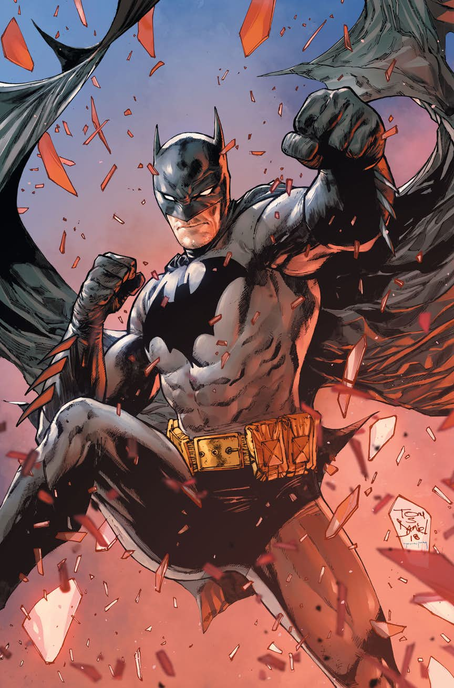

Batman
The origin of Batman, is now a familiar tale. As prosperous physician Thomas Wayne, his wife, Martha, and their young son, Bruce, exited a Gotham City movie house after a nighttime showing of The Mark of Zorro, they were robbed by a thief brandishing a pistol.
Dr. Wayne attempted to protect his wife, but the panicky gunman murdered the adult Waynes as their horrified son watched. The grief-stricken boy dedicated his existence to avenging his parents murders by “spending the rest of my life warring on all criminals.” After years of training his mind and body to perfection—Bruce, having inherited his father’s billions—mulled over a crime-fighting disguise that would terrorize lawbreakers.
A bat flapping through an open window was deemed an omen, and the original tale's end caption heralded, “And thus is born this weird avenger of the dark...this avenger of evil. The Batman.”
